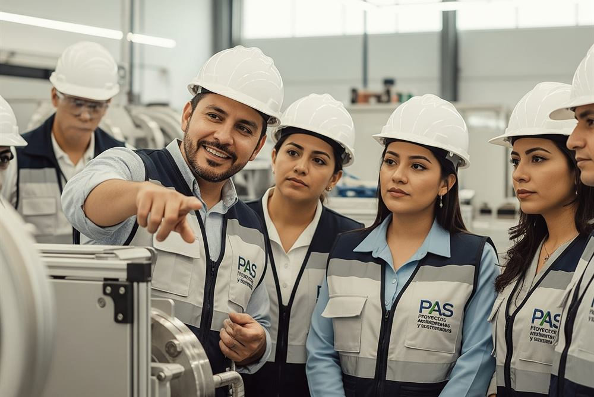
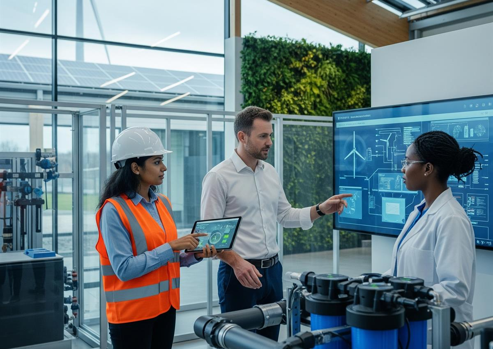

Servicios
Soluciones Ambientales de Alto Impacto
En PAS, vemos cada regulación ambiental no como un obstáculo, sino como una oportunidad para optimizar tus procesos. A través de nuestras auditorías y proyectos de gestión.
Servicio 01
Auditorías Ambientales
Realizamos evaluaciones exhaustivas para verificar que tu empresa cumpla con todas las normativas ambientales. Identificamos proactivamente riesgos y áreas de mejora, ayudándote a prevenir multas y a asegurar la conformidad legal.
Qué incluye
- Revisión documental del marco legal aplicable a tu giro y a tu instalación.
- Recorrido en campo por áreas de proceso, almacenamiento y servicios auxiliares.
- Verificación de residuos, emisiones a la atmósfera, descargas de agua y ruido.
- Informe de hallazgos con nivel de riesgo y prioridad de atención.
- Plan de acción con responsables, plazos y evidencia requerida.
- Acompañamiento durante la ejecución de las medidas correctivas.

Servicio 02
Estudios de Impacto Ambiental (EIA)
Analizamos a fondo los posibles efectos de tu proyecto en el entorno. Nuestros EIA son estudios técnicos cruciales para la toma de decisiones, permitiéndote mitigar riesgos, asegurar la viabilidad ambiental de tu proyecto y obtener las licencias necesarias para operar con total legalidad.
En México, este estudio se presenta ante la autoridad como Manifestación de Impacto Ambiental (MIA), en la modalidad que corresponda al tipo y a la ubicación de tu proyecto.
Qué incluye
- Determinación de la modalidad aplicable y de la autoridad competente.
- Descripción del proyecto y de sus obras y actividades asociadas.
- Caracterización del sistema ambiental y línea base del sitio.
- Identificación y evaluación de impactos por etapa del proyecto.
- Medidas de prevención, mitigación y compensación.
- Integración del expediente y atención de requerimientos de la autoridad.

Servicio 03
Asesoría Ambiental
Ofrecemos consultoría especializada para resolver desafíos específicos y capacitamos a tu equipo para que adopte las mejores prácticas ambientales. Te proporcionamos el conocimiento necesario para tomar decisiones informadas y sostenibles.
Ya sea que necesites una auditoría exhaustiva o un proyecto de gestión a largo plazo, en PAS te guiamos. Permítenos ayudarte a transformar tus desafíos ambientales en oportunidades para tu empresa.
Qué incluye
- Diagnóstico inicial de cumplimiento y matriz de obligaciones legales.
- Acompañamiento en trámites, licencias, registros y renovaciones.
- Diseño e implementación de un sistema de gestión ambiental.
- Preparación y atención de visitas de inspección de la autoridad.
- Indicadores de desempeño ambiental y reporte periódico a dirección.
Servicio 04
Capacitación
En PAS, ofrecemos programas de capacitación diseñados para dotar a tu equipo de las habilidades y la información necesaria para gestionar los retos ambientales. Nuestras formaciones son prácticas, se centran en el cumplimiento legal y en la aplicación real dentro de tu instalación.
Cómo lo hacemos
- Contenido adaptado al giro, al tamaño y a los procesos de tu empresa.
- Modalidad presencial en tus instalaciones o en línea en vivo.
- Casos reales, ejercicios en campo y material de consulta descargable.
- Evaluación de aprendizaje y constancia de participación.
Da el siguiente paso
Asegura el futuro de tu empresa.
No dejes el cumplimiento ambiental al azar. Con nuestros servicios, evitarás riesgos y sanciones, y construirás una base sólida para el crecimiento responsable de tu negocio.